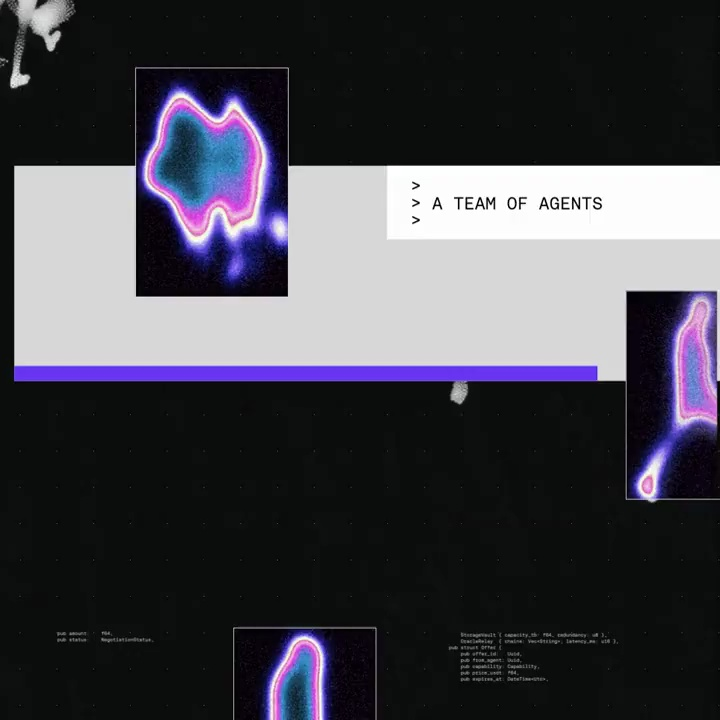
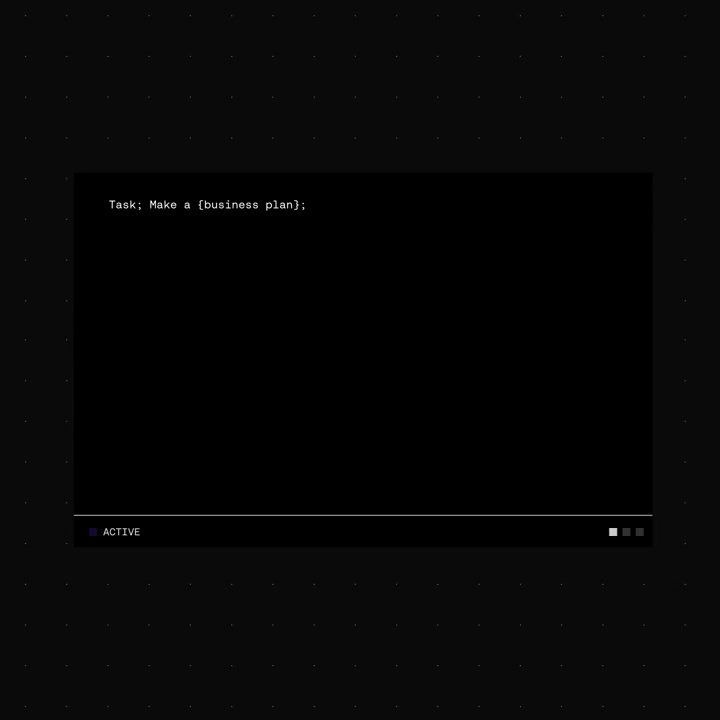
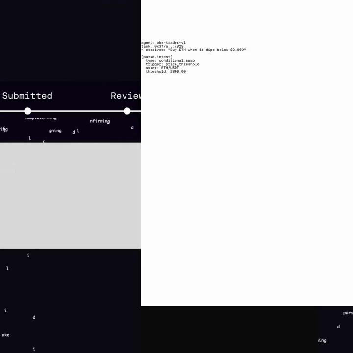
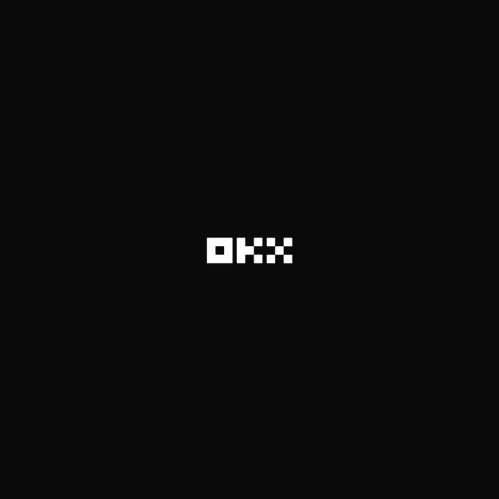

OKX / V196
OKX AI — AI agents can already work, create, and earn.
从一个人扩展到一组代理，再进入服务选择和履约过程。紫色块贯穿人物、目录与选中状态，保持同一个行动主线。
构图与编排 可播放 · 可替换内容
整体编排规则示例
查看 HTML 源码
<!doctype html><html lang="zh-CN"><meta charset="utf-8"><meta name="viewport" content="width=device-width,initial-scale=1"><title>OKX AI — AI agents can already work, create, and earn. · sequence</title><style>html,body{margin:0;width:100%;height:100%;overflow:hidden;background:#080808}canvas{display:block;width:100%;height:100%;object-fit:contain}</style><body data-mode="sequence"><canvas width="1000" height="600"></canvas><script src="data.js"></script><script src="common.js"></script><script src="scene.js"></script><script src="bridge.js"></script></body></html>画面元素人物剪影紫色块服务菜单代理列表详情卡履约状态品牌标
MOTION LANGUAGE
动作与构图
局部动作 · 构图规则
01
人数变化先于界面介绍
灰度人物与植物画面承托简短主张，单个人复制成列后切到代理网格。紫色矩形作为重音遮片与词块，黑白图像保持低饱和。
02
先选类别，再选具体服务
先选类别，再选具体服务规则示例
查看 HTML 源码
<!doctype html><html lang="zh-CN"><meta charset="utf-8"><meta name="viewport" content="width=device-width,initial-scale=1"><title>OKX AI — AI agents can already work, create, and earn. · sequence</title><style>html,body{margin:0;width:100%;height:100%;overflow:hidden;background:#080808}canvas{display:block;width:100%;height:100%;object-fit:contain}</style><body data-mode="clip" data-start="10" data-end="19"><canvas width="1000" height="600"></canvas><script src="data.js"></script><script src="common.js"></script><script src="scene.js"></script><script src="bridge.js"></script></body></html>类别列表只突出一项，再进入代理列表和详情。名称、评分、价格与操作按钮要放在同一信息区，焦点由紫色高亮传递。
03
履约用一条连续状态线
履约用一条连续状态线规则示例
查看 HTML 源码
<!doctype html><html lang="zh-CN"><meta charset="utf-8"><meta name="viewport" content="width=device-width,initial-scale=1"><title>OKX AI — AI agents can already work, create, and earn. · sequence</title><style>html,body{margin:0;width:100%;height:100%;overflow:hidden;background:#080808}canvas{display:block;width:100%;height:100%;object-fit:contain}</style><body data-mode="clip" data-start="19" data-end="24"><canvas width="1000" height="600"></canvas><script src="data.js"></script><script src="common.js"></script><script src="scene.js"></script><script src="bridge.js"></script></body></html>打开、接受、提交、审查和完成依次点亮，当前状态向右推进。最后给一句结算主张再落品牌，不混入新的任务或代理。
04
换场景时重写服务信息
可迁移到创作、研发或业务服务市场。演示价格、评分和状态使用清楚的示例内容，保持目录→详情→执行→完成的结构。
SEQUENCE
段落与节奏
点击段落，定位到上方编排示意。




画面参考 · 离散静帧
KEEP THE RELATIONSHIPS
制作其他主题
- 替换服务类目、代理与履约节点；保留选择和执行链。
制作约束
人物剪影 / 紫色块 / 服务菜单 / 代理列表 / 详情卡 / 履约状态 / 品牌标
- 灰度人物与植物画面承托简短主张，单个人复制成列后切到代理网格。紫色矩形作为重音遮片与词块，黑白图像保持低饱和。
- 类别列表只突出一项，再进入代理列表和详情。名称、评分、价格与操作按钮要放在同一信息区，焦点由紫色高亮传递。
- 打开、接受、提交、审查和完成依次点亮，当前状态向右推进。最后给一句结算主张再落品牌，不混入新的任务或代理。
- 可迁移到创作、研发或业务服务市场。演示价格、评分和状态使用清楚的示例内容，保持目录→详情→执行→完成的结构。